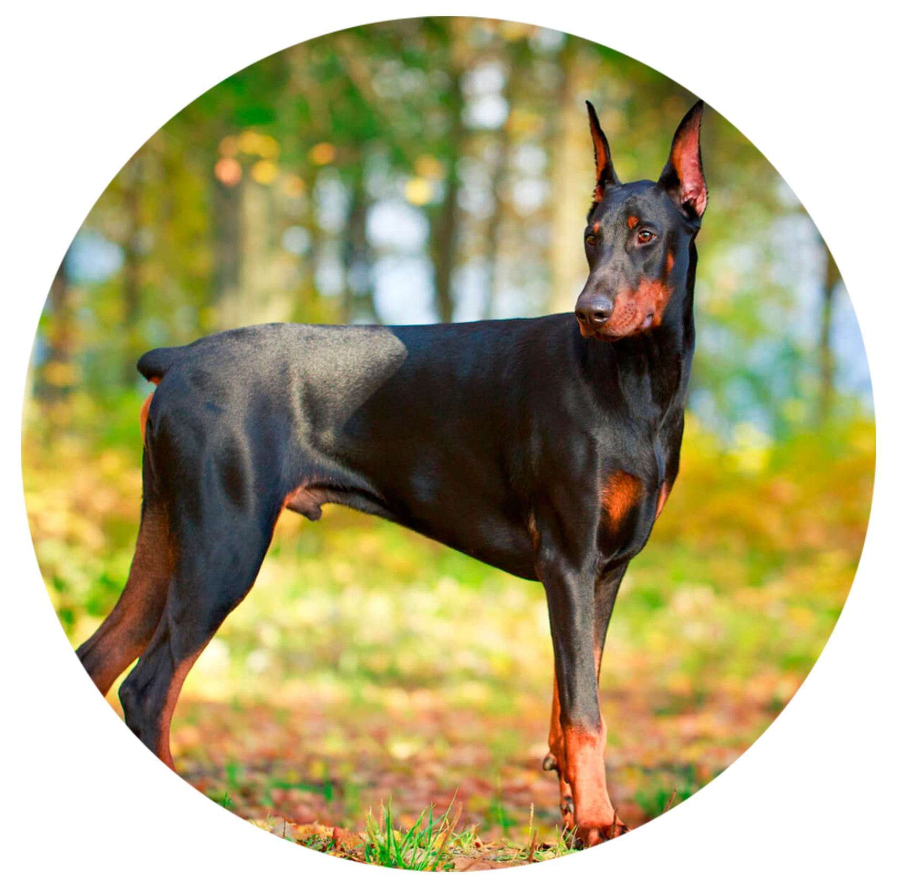

Доберман
Доберман ДОБЕРМАН (Doberman, Doberman Pinscher), порода служебных собак. Другое название - доберман-пинчер. Порода выведена в Германии в городе Апольда (Тюрингия) в конце 19 века сборщиком налогов и содержателем приюта бездомных собак Людвигом Доберманном, в честь которого и носит свое название. Господин Доберманн по роду своей деятельности разъезжал по стране и нуждался в злобной собаке-охраннике, не требующей к тому же особого ухода. Он смог реализовать свой замысел с помощью скрещивания и направленного отбора собак своего питомника и тех, которых привозил из поездок по стране. За основу был взят бдительный и агрессивный Немецкий Пинчер, а к нему была прилита кровь Ротвейлера, возможно, манчестерского терьера и легавой. За короткий срок Л. Доберманну удалось добиться желаемого типа. Порода доберман пригодна к караульной, военной и полицейской службе. В Россию были завезены в 1902 году.
Высота в холке для кобеля - 68,5 см, для суки - 65 см. Доберман имеет горделивый и элегантный вид. Собака компактная, сильная, мускулистая. Голова длинная, плотная, сухая, вытянутой формы. Черепная часть плоская. У черно-подпалых собак мочка носа черная, у остальных в тон окраса. Грудь глубокая. Спина прямая. Лапы сводистые, компактные, параллельно поставлены. Хвост купируют. Шерсть короткая, гладкая, лоснящаяся. Окрас черный, коричневый, голубой с рыжими подпалиными. Доберман - популярная сторожевая собака. Отличается бдительностью и бесстрашием. Привязанность проявляет только к членам семьи хозяина. Короткая шерсть требует минимального ухода, но делает проблематичным содержание добермана в холодном климате - нужно сухое и отапливаемое помещение.
Характер
По характеру эти собаки дружелюбны, миролюбивы, обладают умеренным темпераментом. Они привязываются к семье и любят детей. Кроме трудолюбия и послушания этих собак характеризует присутствие защитного инстинкта, твердости и смелости. Неуверенность в себе, пугливость или, наоборот, излишняя злобность и агрессивность считаются недостатками особи, несоответствием стандарту породы.
Бдительные и энергичные доберманы подходят по характеру не каждому. Собака может найти общий язык со справедливым, твердым и настойчивым хозяином, которому она станет безраздельно преданной. Неправильное воспитание может дать в результате неконтролируемый и неуравновешенный характер питомца, но в умелых руках собака станет незаменимым спутником и преданным телохранителем. Доберман не драчлив, сам на конфликт не нарывается, но обидчив. Жизнь на привязи – не для него.
Вес и рост взрослых
Высота в холке для кобеля - 68,5 см, для суки - 65 см.
Вес кобеля 40—45 кг.
Вес суки 32—35 кг.
Здоровье и возможные проблемы со здоровьем
Склонны к шейному спондилоартриту (синдрому воблера) из-за слияния позвонков шеи и сдавливанию спинного мозга, возможна наследственная болезнь крови, ожирение в среднем возрасте. Кроме того, подвержены кожным проблемам, вздутию, дисплазии тазобедренного сустава, а также врожденному пороку сердца.
Условия содержания
Содержать добермана рекомендуется в домашних условиях, будь то квартира или загородный дом. Но не в коем случае не следует забывать о том что доберман нуждается в качественных, длительных выгулах с активными физическими нагрузками.
Тренировки
Доберман очень энергичный и очень выносливый. Их необходимо выводить на ежедневную длительную прогулку или пробежку. Их нужно научить идти рядом или сзади хозяина, так как по собачьим правилам вожак показывает путь, а вожаком обязательно должен быть человек.
Продолжительность жизни
До 14 лет.
Уход за шерстью
Короткая шерсть добермана не требует особого ухода.